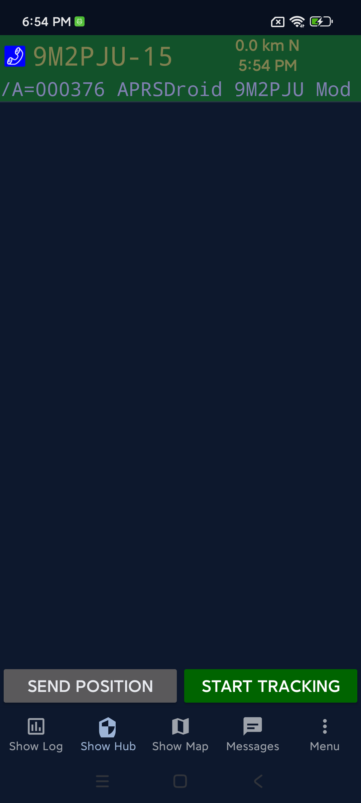
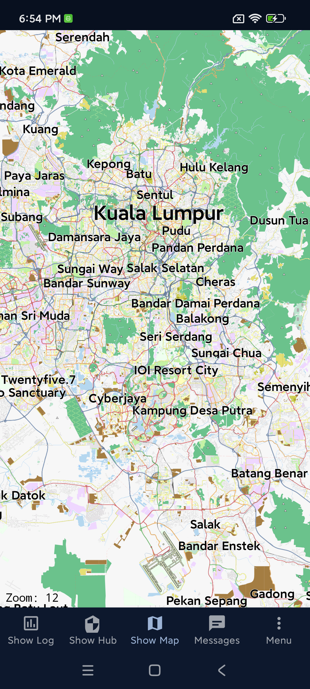
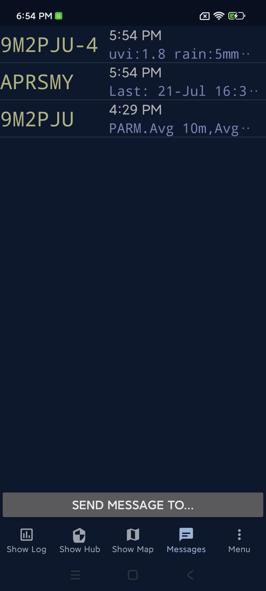
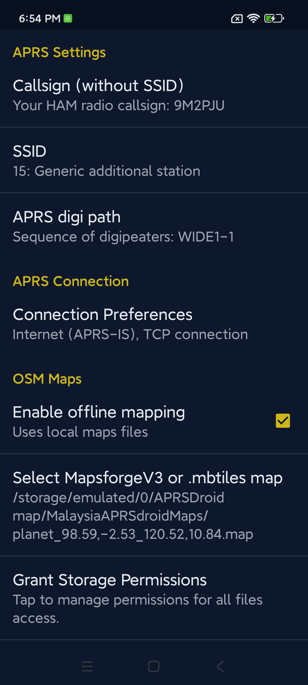

Download
Get the latest APK and the Malaysia offline map below.
Latest release
9M2PJU Malaysia Offline Maps v1.0
Important: Uninstall any official APRSdroid before installing this mod (different signing key). Android 11+ devices need to grant All files access for offline MBTiles maps (see Settings → OSM Maps).
Note: This build is a work in progress — some features may be incomplete or broken at the time of download, as it is actively updated. Google Maps is not supported; the mod uses OSM maps (MBTiles + MapsForge V3) for offline mapping, privacy, and zero dependencies.
Setup & offline maps
1. Install APRSdroid
- Uninstall any previous official version of APRSdroid (different signing key).
- Download the latest signed release APK from the Download section above.
- Install the APK on your Android device (enable Install from unknown sources if prompted).
2. Grant All Files Access (Android 11+)
Required for offline mapping files on Android 11 and above:
- In APRSdroid settings, go to the OSM Maps category.
- Tap "Grant Storage Permissions".
- Grant ALL file permissions for device storage access.
3. Use MBTiles or MapsForge V3 maps
- Set the map viewer to OpenStreetMap.org to use offline maps.
- Select offline maps and enable offline mode from the preferences in the OSM Maps section.
- If offline mode is not enabled, the online OSM maps server will be used.
Where to get maps
APRSdroid requires MBTiles in PNG or JPG format (NOT Vector or PBF). NA7Q provides several tools for downloading offline maps:
| Tool | Platform | Description |
|---|---|---|
| World Map | Any | Ready-to-use starter world map (zoom level 6). |
| OSM Map Maker | Windows | GUI tool for downloading OSM maps. |
| Python Map Maker | Win/Mac/Linux | Python script version, cross-platform. |
| Multi-Map Maker | Windows | Supports Google, Google Sat, Google Terrain, OSM, USGS, USFS, Canada Topo, Thunderforest, MapBuilder Light/Dark, and more. |
| Map Viewer | Windows | Preview different map types to see which style you prefer. |
| BBBike MapsForge | Web | Custom MapsForge OSM maps online. |
Map tips:
- Use a precise location for best results (e.g. "Portland, Oregon", "Oregon USA", "Texas USA"). Use the Map Viewer to double-check the selected area.
- Zoom level is required (1-18). A distance input is optional — if left blank for a city, state, or region, it will download everything within that boundary.
- For states or larger, zoom 13-14 is recommended. Washington State at zoom 15 is 2-5GB depending on the map used.
- Not all maps support all zoom levels or areas — research the map type you want.
What's new in the 9M2PJU Mod
A comprehensive refresh of NA7Q's enhanced APRSdroid. Below is everything that changed compared to the upstream NA7Q fork.
Repo & branding
- Version bumped to
v2.0.0(APRS tocallAPDR20, displayed as "APRSdroid 2.0.0"). Versioning is tag-driven — each release gets avX.Y.Ztag. - New app icon & logo — all 6 density-specific
icon.pngfiles regenerated from a new 2048×2048 source, plus a 512×512logo.png. - Branded splash screen on cold start — full-screen splash via
SplashTheme, 153 KB lossy WebP (down from 4.7 MB PNG).
Modern Android support (targetSdk 33 → 35)
targetSdkVersion33 → 35 (Android 15). Satisfies the Google Play targetSdk floor.minSdkVersionbumped 14 → 19 to enable modern AndroidX libraries.- Foreground service types (Android 14+) —
AprsServicedeclareslocation|microphone|connectedDevice;ServiceNotifierpasses an explicit type bitmask tostartForeground()on API 29+. - Bluetooth permissions (Android 12+) — added
BLUETOOTH_SCANwithneverForLocationandBLUETOOTH_CONNECT; legacyBLUETOOTH/BLUETOOTH_ADMINcapped atmaxSdkVersion=30. - Storage permissions (Android 11+) — added
MANAGE_EXTERNAL_STORAGEfor offline MBTiles map files; legacy storage perms capped atmaxSdkVersion=32. POST_NOTIFICATIONS(Android 13+) — requested at runtime viaPermissionHelper.- Edge-to-edge opt-out (Android 15+) —
WindowCompat.setDecorFitsSystemWindows(window, true)prevents content from going under system bars.
UI modernization (Phase 1 — theme & chrome)
- Material Design dark theme — migrated from
Theme.Holo(2011) toTheme.MaterialComponents. The app uses a dark-only theme with navy surfaces and amber accent, matching the app icon. - Brand palette derived from the app icon — navy surfaces
#0D182D/#13203A/#1C2F51(elevation tints), amber accent#CEB619, cool grey text. - New dependencies:
androidx.appcompat:appcompat:1.6.1+com.google.android.material:material:1.9.0. - Material buttons with amber background and navy text, applied via
materialButtonStyle. - Activity migrations:
APRSdroid,ProfileImportActivity,KeyfileImportActivity→AppCompatActivity. - Map activity excluded —
MapAct(MapsForge) keeps Holo theme for compatibility; will be migrated in a later phase.
Phase 2 (not yet done): ListActivity → RecyclerView,
PreferenceActivity → PreferenceFragmentCompat, Material dialogs, layout hardcoded
colors → @color/ resources, dynamic color (Material You), core-splashscreen API.
This landing page
- Custom domain: aprsdroid.hamradio.my.
- Dark navy + amber theme matching the app icon.
- Live download counters — no backend. Real GitHub release download counts.
- Download buttons for every release APK, with file size and per-asset download count.
UI/UX improvements (latest)
- Adaptive launcher icon for Android 13+ — the app icon now fills the entire launcher slot with a navy background, matching how WhatsApp and other modern apps look. No more shrunken logo with a default border.
- Edge-to-edge fix for Android 15/16 — content no longer draws under the status bar or behind the under-display camera. Proper system bar inset handling for all screens.
- Bottom navigation blank gap fixed — the bottom nav bar's background now extends to the screen edge on Android 16, with no blank area below the icons.
- No sliding animation between tabs — switching between Log, Hub, Map, and Messages is now instant. Activity transition animations disabled globally.
- Map recenter button repositioned — moved above the OSM zoom controls to avoid overlap.
- OSM Maps preferences reordered — the file picker now appears before the offline mapping toggle, with a note to select a map file before enabling offline mode.
- Bottom navigation with Menu tab — quick access to Preferences, Hub, Log, Map, Messages, and more from any screen. Replaces the old 3-dot overflow menu.
- Map auto-zooms to GPS location — on first open, the map centers on the user's last known GPS position instead of a hardcoded default (Berlin).
- About dialog with logo and full credits — app logo, project lineage, and credits to Bob Bruninga (WB4APR), Georg Lukas (DO1GL), NA7Q, and 9M2PJU.
- Donation popup — appears on page load with Malaysia e-wallet QR, Buy Me a Coffee, and Wise links. Auto-closes after 5 seconds. Fixed to stay on-screen on mobile browsers.
- Crash fixes — Android 14+
registerReceiverSecurityException fixed; MessageActivity null ActionBar crash fixed; map screen crash on Material Components theme fixed.
Features
Real-time position reporting
GPS, fixed, periodic, or SmartBeaconing™. Share your location on the APRS network.
Offline maps
MBTiles + MapsForge V3. No Google Maps dependency — full OSM compatibility, works without a data connection.
APRS messaging
Send and receive messages through the network. Per-station conversation threads.
Digipeater & I-gate
Full 2-way Internet Gateway. Direct or full digipeating. Flexible packet routing (RF + APRS-IS, or RF-only while IGating).
Radio control
Support for Vero, BTech, Radioddity, and other radios. DigiRig interface support.
Bluetooth TNC
Classic Bluetooth and stable BLE support. KISS, TNC-2, Kenwood, and AFSK protocols.
Mic-E compression
Efficient position encoding with Mic-E, including EMERGENCY status support.
Enhanced station viewer
Hub log sortable by distance or newest. Speed, course, and altitude information.
Enhanced features
Inherited from NA7Q's enhanced APRSdroid fork (homepage) — not found in the official APRSdroid.
RF & networking
- Digipeater — direct or full digipeating capabilities.
- 2-Way IGating — full Internet Gateway functionality.
- Flexible packet routing — send packets via RF and APRS-IS, or RF only while IGating.
- Radio control — support for Vero, BTech, Radioddity, and other radios.
- DigiRig support — seamless integration with DigiRig interfaces.
- Bluetooth Low Energy — stable BLE support.
Advanced offline mapping
- Offline maps with MBTiles — complete offline operation capability.
- MapsForge V3 support — enhanced offline mapping with MapsForge.
- OpenStreetMap integration — full OSM compatibility for mapping.
- Google Maps not supported — the mod uses OSM maps (MBTiles + MapsForge V3) for offline mapping, privacy, and zero dependencies.
Data & compression
- Mic-E compression — efficient position encoding.
- Mic-E emergency status — including EMERGENCY status support.
- Standard compression — multiple compression formats supported.
User experience enhancements
- Unit options — choose between Metric or Imperial units.
- Hardware control — option to disable hardware acceleration.
- Enhanced station viewer — added speed and course information.
- Advanced messaging tweaks — features for power users.
- Message ID control — option to disable Message ID.
- Smart Hub log — sort by distance or newest stations.
- Under-the-hood improvements — numerous performance and stability enhancements.
Offline maps
Malaysia, Singapore & Brunei
A ready-to-use offline map for Malaysia, Singapore, and Brunei is
available as a GitHub release asset (528 MB zip, contains MapsForge
.map + MBTiles files).
Download 9M2PJU Malaysia Offline Maps
Installation
- Download and extract the zip file on your computer
- Copy
malaysia-singapore-brunei.mapto your phone (any folder) - In APRSdroid: Menu → Preferences → OSM Maps → Select MapsforgeV3 or .mbtiles map
- Select the
.mapfile you copied - Enable "Enable offline mapping"
- Open Map — the offline map loads without internet
Other regions
NA7Q provides several tools for downloading offline maps for other regions:
- World Map — ready-to-use starter world map (zoom 6)
- OSM Map Maker (Windows) — GUI tool for downloading OSM maps
- Python Map Maker (cross-platform) — Python script version
- Multi-Map Maker (Windows) — Google, OSM, USGS, Canada Topo, and more
- BBBike MapsForge (web) — custom MapsForge OSM maps online
Connecting a LoRa APRS tracker via Bluetooth (BLE KISS TNC)
APRSdroid can connect to LoRa APRS tracker boards (e.g. LilyGO T-Beam, TTGO T-Beam, Heltec WiFi LoRa 32, RAK Wireless modules, and other ESP32-based APRS trackers) using Bluetooth Low Energy (BLE) with the KISS TNC protocol. This lets you send and receive APRS packets over LoRa radio without a phone data connection.
Requirements
- A LoRa APRS tracker board with BLE KISS TNC firmware (e.g. richonguzman's LoRa APRS Tracker)
- Android phone with Bluetooth
- APRSdroid 9M2PJU Mod installed
Setup steps
- Flash your tracker board with BLE KISS TNC firmware (if not already done). The firmware must advertise a BLE KISS service.
- Power on the tracker and put it in BLE pairing mode (usually automatic on boot).
- Pair the tracker with your phone:
- Go to Android Settings → Bluetooth
- Find your tracker in the device list (e.g. "LoraTracker" or "LoRa_APRS")
- Tap to pair
- Configure APRSdroid:
- Open APRSdroid → Menu → Preferences → Connection Setup
- Select Bluetooth TNC (KISS) as the backend
- Select your tracker from the Bluetooth device list
- Set your callsign and passcode
- Start the service:
- Tap the Start button (or Menu → Start)
- APRSdroid will connect to the tracker via BLE
- Position reports are sent over LoRa radio
- Received packets appear in the Log and on the Map
How it works
GPS → Phone → APRSdroid → BLE → LoRa Tracker → LoRa Radio → APRS Network
↓
Received packets → APRSdroid
- Outgoing: APRSdroid gets your GPS position, formats an APRS packet, and sends it to the tracker via BLE KISS TNC. The tracker transmits it over LoRa radio.
- Incoming: The tracker receives LoRa APRS packets and forwards them to APRSdroid via BLE. APRSdroid decodes and displays them.
Screenshots
A look at the app in action on a real device.





About & credits
APRSdroid has a rich history of contributions from the amateur radio community. This project stands on the shoulders of giants.
Georg Lukas (ge0rg) — Original Author
APRSdroid was created by Georg Lukas, ge0rg and has been the premier APRS client for Android since 2010. Written in Scala with a Java core, it supports TCP/IP, AFSK, Bluetooth TNCs, and USB TNCs. Georg continues to maintain the upstream project and graciously licenses it under the GNU GPLv2 so that the community can build on his work.
NA7Q — Enhanced Fork
NA7Q's fork builds on Georg's original work with significant enhancements:
- BLE TNC support for modern Bluetooth TNCs (Mobilinkd, DigiRig, etc.)
- Digipeater and IGate functionality
- Symbol overlay support
- Mic-E decoding improvements
- Various bug fixes and compatibility updates
NA7Q's fork is the direct upstream of this mod.
Homepage: https://na7q.com/aprsdroid-osm/
9M2PJU — This Mod
This mod, maintained by 9M2PJU (Kuala Lumpur, Malaysia), builds on NA7Q's fork with a focus on modern Android compatibility, UI/UX polish, and project infrastructure. Contributions include:
- Adaptive launcher icon for Android 13+ — full logo with navy background, matching modern app icons.
- New app icon and logo across all density buckets.
- Branded splash screen with perfect-fit centerCrop rendering.
- Modern Android support —
targetSdk 35, foreground service types for Android 14+, Bluetooth permissions for Android 12+, storage permissions for Android 11+,POST_NOTIFICATIONSfor Android 13+, edge-to-edge opt-out with proper system bar inset handling for Android 15+. - Material 3-inspired UI design system —
Theme.MaterialComponentswith tonal navy/amber palette, shape theming, refined typography, modern component styles, bottom navigation bar, dark theme, no sliding animations between screens. - GitHub Actions CI/CD — signed release APK builds, automatic GitHub Releases on
v*tags, auto-generatedversion.json. - GitHub Pages landing page at aprsdroid.hamradio.my with live download counters, responsive for desktop and mobile.
- In-app update checker — download and install updates directly from GitHub Releases, with Cloudflare CDN fallback.
- Android 14+ crash fix —
RECEIVER_NOT_EXPORTEDflag forregisterReceiver. - App name and About dialog unified across all 52 locale files.
- Version bumped to
v2.0.0(tocallAPDR20). - Comprehensive README and documentation rewrite.
Bob Bruninga, WB4APR — Creator of APRS
Bob Bruninga, WB4APR (1947–2022) created the Automatic Packet Reporting System (APRS) in the 1980s. His vision of a real-time, position-aware digital communications network for amateur radio lives on in every APRS client, igate, and digipeater worldwide. Without Bob's pioneering work, none of this would exist.
APRS® is a registered trademark of Bob Bruninga, WB4APR.